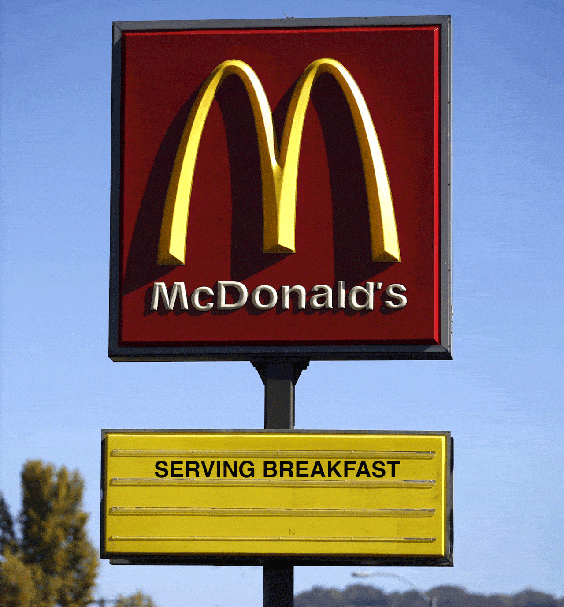

MY PART-TIME WORKPLACE
My experience working as a part -time employee is either sweet or bitter. Not everything we imagine will come true like that’s what I felt while being a part -time employee.
I started working as a part -time employee after I finished school in 2019.
At that point I felt bored and thought of working while waiting for the university admissions results to come out. I started working in January at a school uniform shop, Kaunselor Sdn.Bhd.
I worked there with a sense of joy and happiness because at that time my co -worker was my best friend and we lived nearby. Lots of fun things and new things I got where I learned to use an embroidery machine to make nametags and embroider logos on shirts.
In addition, we also frequently check for stock available in the store to update to HQ.
The starting salary I received was RM800 because I started working late and my next salary was RM1400.

Next, I also worked in the field of F&B, namely Food and Beverages at McDonalds Bandar Baru Bangi, Selangor. At first I was worried that I would be exhausted and unable to work in this field temporarily to spend my semester break.
Yet I was wrong where I liked and enjoyed working at McDonalds because there were so many things that excited me.
For each McDonalds employee or crew, we are given free food or staff meals to use or eat during breaks.
But the sky is not always clear because I have had a bitter experience where my finger was sliced in because it hit a sharp iron door and made it difficult for me to do my job.
In addition, I have also been insulted by customers for giving unheated food. I can’t fight because that is the right of the customer and they are entitled to what they want.
I love working part time because to earn my own money and try to learn to be independent as well as control my salary expenses.